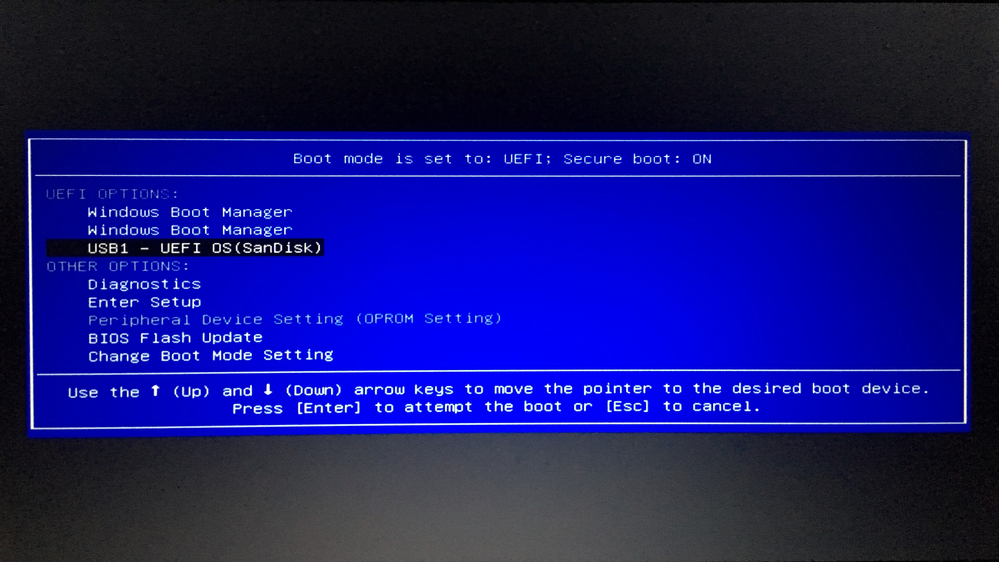

Insert USB drive into the laptop. Preferably, use the SuperSpeed (SS) USB 3.0 port.
Power on the computer and repeatedly press the F9 key.
When the boot menu appears, select "USB Hard Drive (UEFI)" and press Enter.
Re-insert USB drive to the Refresh Station to complete the refresh.
Follow these steps to refresh Dell laptop:
Insert USB drive into the laptop. Preferably, use the SuperSpeed (SS) USB 3.0 port.
Power on the computer and repeatedly press the F12 key.
When the boot menu appears, select "USB1 - UEFI OS" and press Enter.

Re-insert USB drive to the Refresh Station to complete the refresh.
Follow these steps to refresh Mac:
Insert USB drive into the Mac. It is stongly recommended to charge the Mac while refreshing, so if it
only has one USB-C port you should use a splitter.
Power on (or reboot) the Mac and hold the Option key until boot options are visible. Select
"Refresh".
When the refresh process is complete, hold the power button down until the shutdown options are
displayed. Select "Shut Down".
Re-insert USB drive to the Refresh Station to complete the refresh.
Follow these steps to refresh X-Box One:
If the Xbox is plugged in, unplug it and wait a few seconds.
Plug in the USB drive and power cord.
Press and hold the BIND and EJECT buttons while turning it on.
Listen for two "power-up" tones a couple of seconds apart.
Release the BIND and EJECT buttons.
Wait a few seconds for the Xbox button light to turn off, then unplug the Xbox and remove the USB
drive.